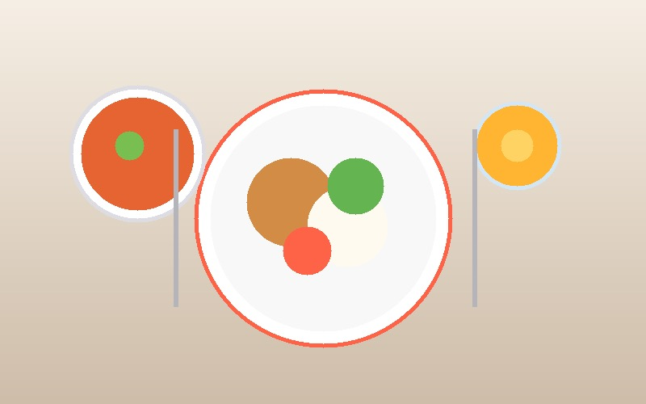

О нашей компании

«МосЛанч» — ведущая городская служба доставки сбалансированных обедов и бизнес-ланчей для сотрудников офисов, предприятий и жителей Москвы. Мы работаем с 2018 года и ежедневно кормим более 3 000 довольных клиентов в самых разных уголках столицы.
Наша цель — превратить обеденный перерыв в полноценный источник энергии и удовольствия. Мы используем только свежие фермерские продукты от проверенных российских поставщиков и готовим каждую порцию в день доставки на собственной высокотехнологичной кухне строго по стандартам СанПиН и ХАССП.
Почему клиенты выбирают нас
- Быстрая доставка за 45 минут: курьерская служба с термосумками привозит ланчи горячими точно в назначенный временной интервал в любой район Москвы.
- Честный и натуральный состав: никаких искусственных консервантов, усилителей вкуса и полуфабрикатов — только свежее мясо, овощи и натуральные специи.
- Обновляемое меню каждую неделю: более 30 разнообразных блюд в каталоге, включая диетические, вегетарианские и постные позиции.
- Экологичная упаковка: биоразлагаемые термоконтейнеры сохраняют температуру и аппетитный аромат блюд без вреда для экологии.
Хиты продаж и самые популярные блюда
| № | Категория | Название блюда | Вес / объем | Стоимость |
|---|---|---|---|---|
| 1 | Супы | Томатный крем-суп Гаспачо с базиликом | 350 г | 195 ₽ |
| 2 | Главные блюда | Лазанья мясная с пармезаном и соусом бешамель | 310 г | 385 ₽ |
| 3 | Главные блюда | Котлета по-киевски с нежным картофельным пюре | 280 г | 320 ₽ |
| 4 | Салаты | Классический Цезарь с цыпленком гриль | 220 г | 270 ₽ |
| 5 | Напитки | Облепиховый морс со свежим имбирем | 300 мл | 120 ₽ |
| 6 | Десерты | Морковный бисквитный торт с грецким орехом | 140 г | 180 ₽ |